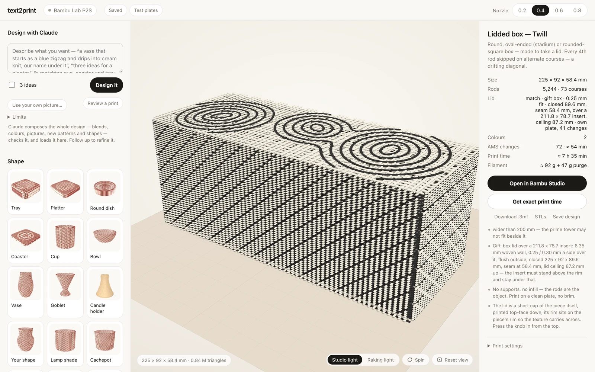
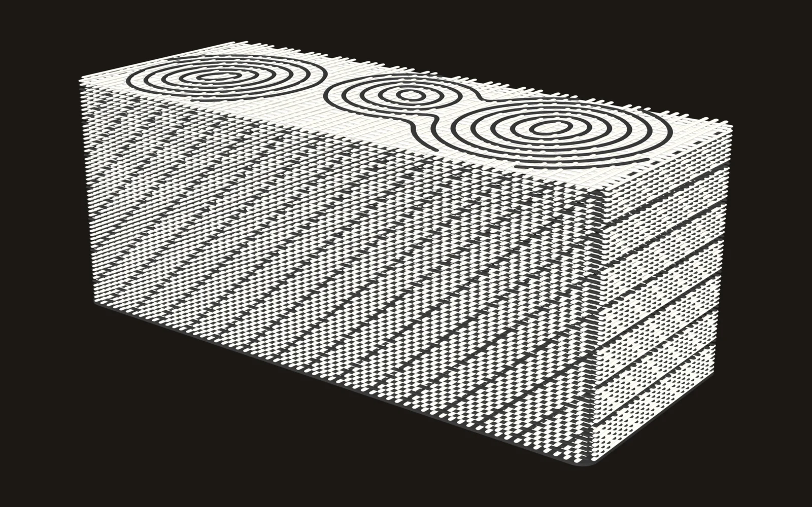
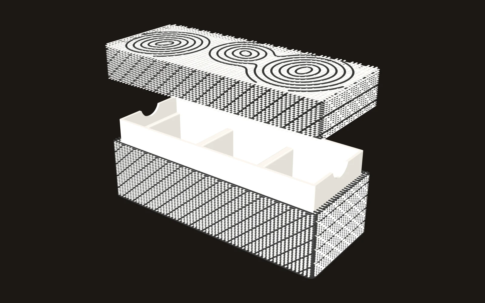
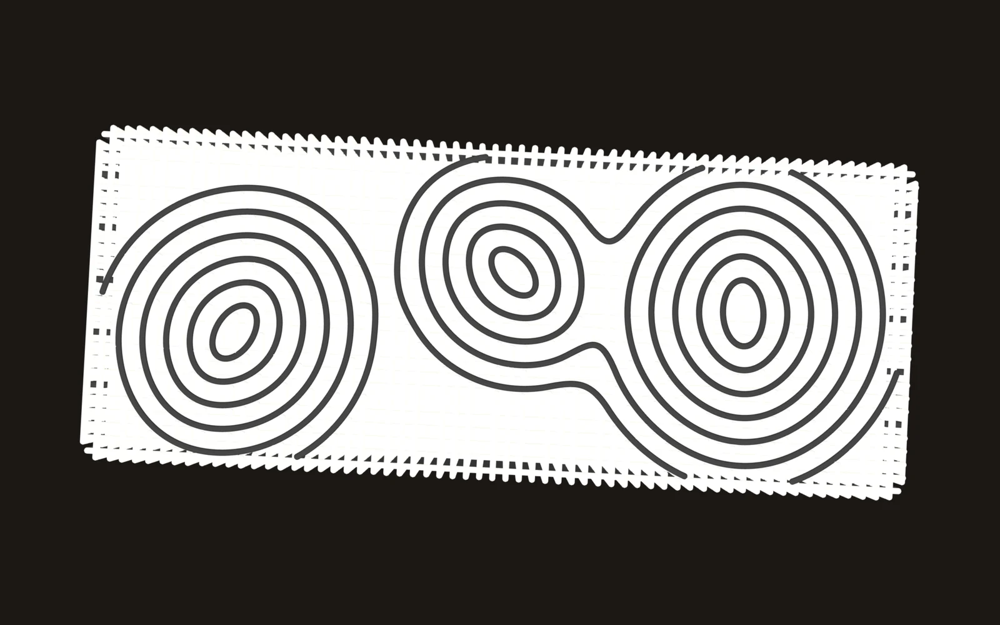
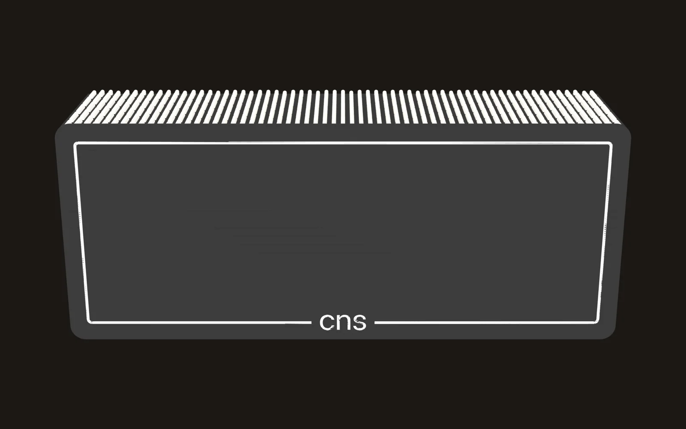

Digital · text2print on GitHub ↗
A studio that turns a shape,
a texture and a sentence into a print.
text2print builds print-ready Bambu Lab projects from a shape and a texture, or from a description Claude turns into a design, and checks every layer before it hands over a file.
Modeling is the slow part.
A textured, two-colour, lidded object takes hours to model and more hours to make printable. text2print generates the geometry, the colour changes and the slicer settings together, so the file that comes out is the file that prints.
Pick a shape and a texture, or describe it.
The studio runs locally in the browser. Choose a shape, a texture, colours and a lid, or type a sentence into Design with Claude and let it compose the design. The right panel shows size, rod count, colour changes, print time and filament; one button writes a Bambu Studio project for the P2S.

Woven textures print as rods: each layer is a course of lines that cross the course below, so the weave is the object, with no infill and no supports. Colour changes follow the courses, fades dither between two filaments, and lids are short caps of the same weave printed face down.
A woven case for three watches.
A twill base in charcoal and cream holds a printed sleeve with three bays. The lid is a gift-box lid built over an insert: the sleeve stands 21 mm above the base and is the neck the lid slides onto, so the closed box is one block with a single seam.




The lid's weave starts where the base's stops, so its rows match a single box woven to the full height, rod for rod. The contour lines are continuous rods laid on the lid's top course, and the base's underside carries an inlaid border and maker mark in the first two layers.
- Fitlid 0.25–0.30 mm a side over the sleeve · base 0.6 mm
- Base≈7 h 22 m · 75 colour changes
- Lid≈5 h 11 m · printed face down on a cream raft
Every layer checked, then the slicer.
Before a file is handed over, the mesh is cut into its print layers and every island is checked for something underneath it. The check found a real bug: on a 6 mm wall, the twill's skipped rod was sometimes the only rod in the wall, leaving 440 cross-rods printing in mid-air. The weave now never skips a rod that something rests on, and a test keeps it that way.
The project is then sliced headless with the Bambu Studio CLI and its warnings read back. Projects default to a 60 °C bed on the textured PEI plate, write every per-filament setting the GUI expects, and print woven lid tops on a peel-off raft in the lid's lightest colour.
- Watch case0 floating islands · 0 slicer warnings
- LanguagePython 3.12 · trimesh · manifold3d · CadQuery
- Runtimelocal studio · Claude Code skill · Bambu Studio CLI
Built and run by Collin Stilwell, product security engineer.